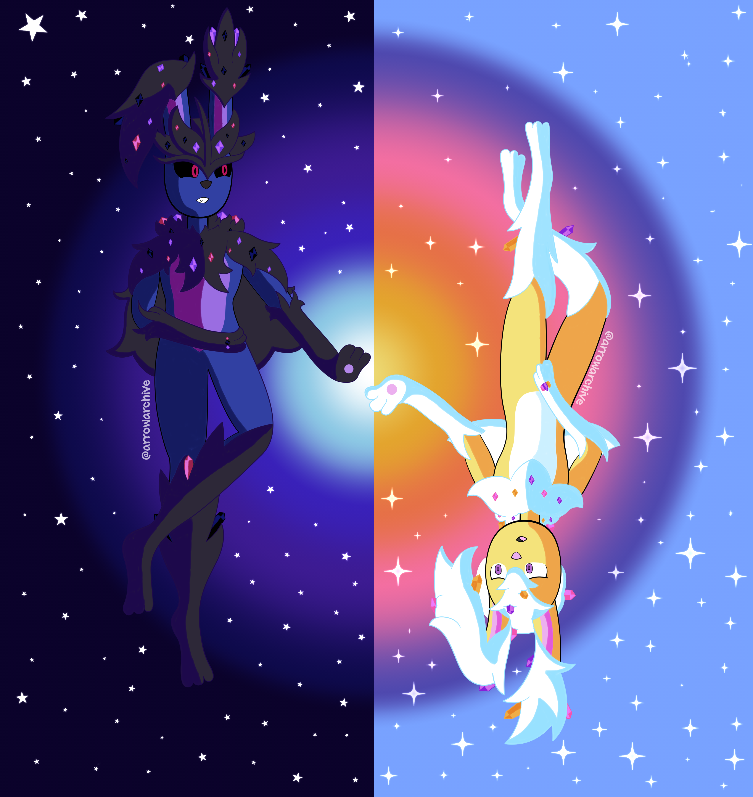
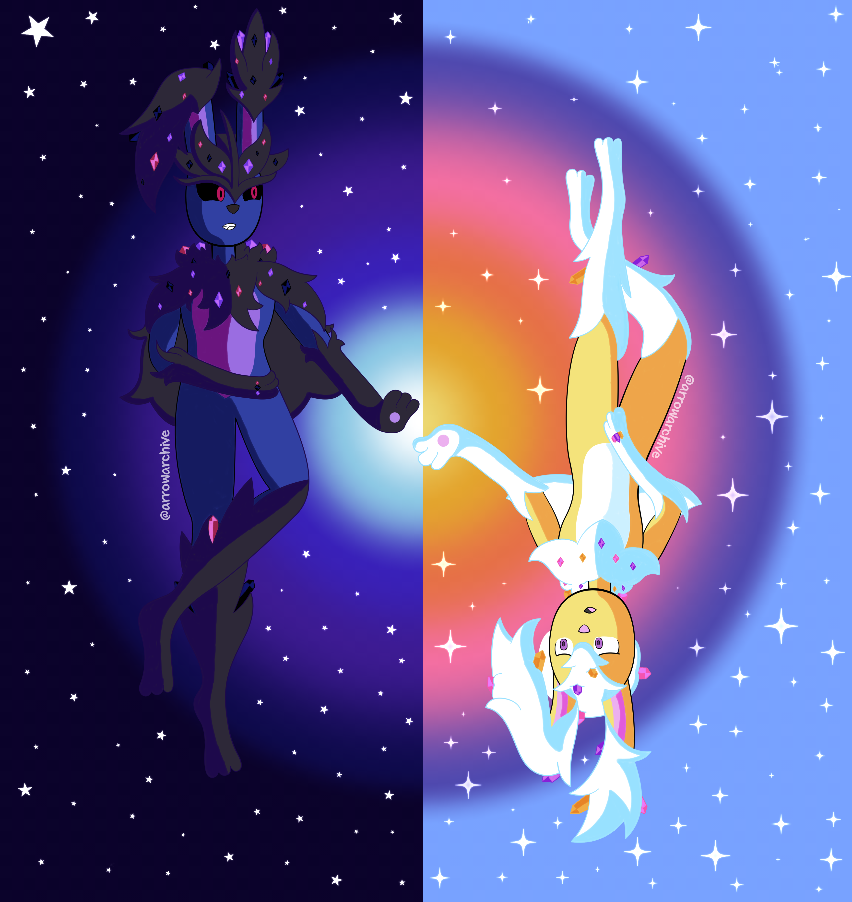

Calling Out Mayday
 

My first drawing of the sky rabbits featured Kesshō and her evolution line, but after listening to “Mayday” by TheFatRat, I was inspired to draw her again.
This time, it’s a yin and yang-like drawing featuring Kesshō and her counterpart, Mayonaka (真夜中), whose names translates to midnight in Japanese. She’s a similar species of rabbit, but with different powers compared to Kesshō. I like her design, so I need to draw her again later.
That said, I love how the midnight/sunrise contrast on this piece turned out. It took a while, but I’m very proud of it!